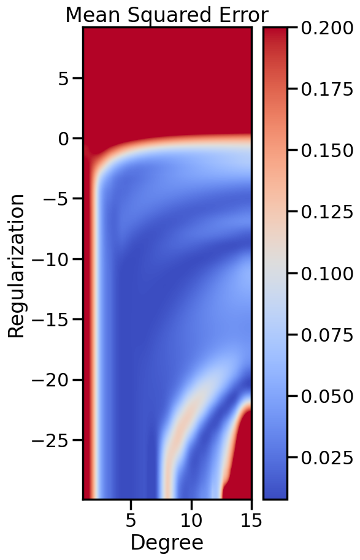

In the prior chapter, we covered how different loss functions and regularization terms affected a linear model, in terms of the model’s qualitative performance and its affect on the training score. However, as we saw, the training score an be a misleading performance indicator. How might we judge the model’s performance more rigorously? This chapter addresses this by reviewing the why and how of performing Cross Validation, and also what this means regarding optimizing the hyperparameters of a model.
Code
import numpy as npimport matplotlib.pyplot as pltfrom sklearn.pipeline import Pipelinefrom sklearn.preprocessing import PolynomialFeaturesfrom sklearn.linear_model import LinearRegressionfrom sklearn.linear_model import Ridgeimport seaborn as snssns.set_context('poster')pal = sns.color_palette("Paired")cmap = sns.blend_palette(pal,as_cmap=True)np.random.seed(1)# Number of data pointsn_samples =30# True Function we want to estimatetrue_fun =lambda X: np.cos(1.5* np.pi * X)# Noisy Samples from the true functionX = np.sort(np.random.rand(n_samples))y = true_fun(X) + np.random.randn(n_samples) *0.1plt.figure(figsize=(10,10))# Plot the true function:X_plot = np.linspace(0, 1, 100)plt.plot(X_plot, true_fun(X_plot), '--',label="True function")# Plot the data samplesplt.scatter(X,y, label="Samples")plt.legend(loc="best")plt.show()
2.1 Getting an Unbiased Estimate of Out-of-Sample Performance
When we train a machine learning model, we are typically interested in how well the model will perform on data it has not seen before. This is often referred to as the model’s generalization performance. However, if we evaluate the model’s performance on the same data it was trained on, we may get an overly optimistic estimate of its true performance. This is because the model may have simply memorized the training data, rather than learning the underlying patterns. One popular way to assess this is through Cross Validation:
# Now let's split the data into training and test data:from sklearn.model_selection import train_test_splitX_train, X_test, y_train, y_test = train_test_split( X, y, test_size=0.2, random_state=0)
Let’s take a look at what the above has actually done.
Code
print('X_train\n',X_train,'\n')print('X_test\n',X_test,'\n')print('y_train\n',y_train,'\n')print('y_test\n',y_test,'\n')plt.figure(figsize=(8,8))plt.plot(X_plot, true_fun(X_plot), '--',label="True function")# plot the training and testing points in colorsplt.scatter(X_train,y_train, label="Training data")plt.scatter(X_test,y_test, label="Testing data")plt.legend(loc="best")plt.show()
The key idea in cross validation is to test the model on data that was separate from the data you trained on, therefore establishing two datasets: a training set and a test set. The training set is used to fit the model, while the test set is used to evaluate its performance. This way, we can get a more realistic estimate of how well the model will perform on new, unseen data.
This is a simplified type of cross-validation often referred to as “Shuffle Splitting” and is one of the most common, but it is useful to review other types of cross-validation via this nice summary page from the SKLearn library, which covers a variety of important variants including:
K-Fold Cross Validation
Leave-One-Out Cross Validation
Stratified Cross Validation
Group-wise Cross Validation
Time Series Split Cross Validation
Discussion Point: Under what conditions or situations would using each type of cross-validation above be appropriate versus inappropriate?
2.2 Finding the Optimal Hyper-parameters
Now that we have introduced the usage of hyper-parameters and cross-validation, a natural question arises: How do we choose the hyper-parameters? There are many ways to do this, and this section will describe the most common and basic ones, while leaving more advanced techniques (like Implicit Differentiation) for later. Specifically, this section will: 1. Define the concepts of Grid and Random Hyper-parameter search. 2. Use Grid and Random search to optimize hyper-parameters of a model. 2. Distinguish when Randomized Search is much better than grid search. 3. Describe how Global Optimization procedures such as Bayesian Optimization work. 4. Recognize why none of those at all work in High Dimensions and describe the “Curse of Dimensionality”
In future chapters once we cover more advanced derivative methods, we can discuss how to use tools like Implicit Differentiation to directly compute the gradient of the cross-validation score with respect to hyper-parameters, and then use this gradient to optimize the hyper-parameters using standard gradient-based optimization methods. However, for now, let’s focus on more basic derivative-free methods, since they are more widely used and easier to understand.
Let’s start by returning to our Polynomial example, and this time focus on finding the best combination of degree and penalty weight for a linear model.
Code
# from sklearn.preprocessing import PolynomialFeatures# from sklearn.pipeline import Pipeline# from sklearn.linear_model import Ridge# from sklearn.metrics import mean_squared_error
Code
from sklearn import model_selection# Let's plot the behavior of a fixed degree polynomialdegree =15# (i.e., f(x) = w_1*x + w_2*x^2 + ... + w_15*x^15)# but where we change alpha.alphas = np.logspace(start=-13,stop=4,num=20)polynomial_features = PolynomialFeatures(degree=degree, include_bias=False)scores = []for a in alphas: linear_regression = Ridge(alpha=a) pipeline = Pipeline([("polynomial_features", polynomial_features), ("linear_regression", linear_regression)]) cv_scores = model_selection.cross_val_score(pipeline, X[:,np.newaxis], y, scoring="neg_mean_squared_error", cv=20) scores.append(cv_scores)scores = np.array(scores)plt.figure(figsize=(7,3))plt.semilogx(alphas,-np.mean(scores,axis=1),'-')plt.ylabel('Test MSE')plt.xlabel('Alpha ($\\alpha$)')sns.despine()plt.show()
2.3 What if we have more than one variable?
Let’s look at both polynomial degree and regularization weight
Code
scores = []alphas = np.logspace(start=-13, # Start at 1e-13 stop=4, # Stop at 1e4 num=40) # Split that into 40 piecesdegrees =range(1,16) # This will only go to 15, due to how range worksscores = np.zeros(shape=(len(degrees), # i.e., 15len(alphas))) # i.e., 20for i, degree inenumerate(degrees): # For each degree polynomial_features = PolynomialFeatures(degree=degree, include_bias=False)for j,a inenumerate(alphas): # For each alpha linear_regression = Ridge(alpha=a) pipeline = Pipeline([("polynomial_features", polynomial_features), ("linear_regression", linear_regression)]) cv_scores = model_selection.cross_val_score(pipeline, X[:,np.newaxis], y, scoring="neg_mean_squared_error", cv=20) scores[i][j] =-np.mean(cv_scores)
plt.figure(figsize=(5,10))plt.imshow(Zs, cmap=cm.coolwarm, # Allows you to set the color vmin=Zs.min(), vmax=0.2, # The min and max Z-Values (for coloring purposes) extent=[Xs.min(), Xs.max(), # How far on X-Axis you want to plot Ys.min(), Ys.max()], # How far on Y-Axis interpolation='spline16', # How do you want to interpolate values between data? origin='lower')plt.title('Mean Squared Error')plt.xlabel('Degree')plt.ylabel('Regularization')plt.colorbar()

2.4 Optimization
At the end of the day, all this is doing is optimization/search over different parameters.
How should we go about automating this?
Most common: Grid Search.
Code
print('parameters we could change:')for k in pipeline.get_params().keys():print(" ",k)
# How do we want to do cross-validation?from sklearn import model_selectionnum_data_points =len(y)# 4-fold CVkfold_cv = model_selection.KFold(n_splits =4) # Or maybe you want randomized splits?shuffle_cv = model_selection.ShuffleSplit(n_splits =20, # How many iterations? test_size=0.2# What % should we keep for test? )
Code
X=X[:,np.newaxis]grid_search = GridSearchCV(pipeline, # The thing we want to optimize parameters, # The parameters we will change cv=shuffle_cv, # How do you want to cross-validate? scoring ='neg_mean_squared_error' )grid_search.fit(X, y) # This runs the cross-validation
In a Jupyter environment, please rerun this cell to show the HTML representation or trust the notebook. On GitHub, the HTML representation is unable to render, please try loading this page with nbviewer.org.
In reality, grid search is wasteful and not easy to control. A better (and still easy way) is to randomize the search.
Code
# Now, instead of specifying exact which points to test, we instead# have to specify a distribution to sample from.# For example, things from http://docs.scipy.org/doc/scipy/reference/stats.htmlfrom scipy.stats import randint as sp_randintfrom scipy.stats import lognorm as sp_lognormfrom sklearn.model_selection import GridSearchCV, RandomizedSearchCVparameters = {'polynomial_features__degree': sp_randint(1,20), # We want an integer'linear_regression__alpha': sp_lognorm(1),'polynomial_features__include_bias':[True, False]} # Selecting from two is fine
Need something whose logarithmic distribution we can control. How about a lognormal? \[
\mathcal{N}(\ln x;\mu,\sigma) = \frac{1}{\sigma\sqrt{2\pi}} \exp\left[-\frac {(\ln x - \mu)^2} {2\sigma^2}\right].
\]
parameters = {'polynomial_features__degree': sp_randint(1,20), # We want an integer'linear_regression__alpha': sp_lognorm(sigma,scale=1e-7),'polynomial_features__include_bias':[True, False]} # Selecting from two is fine
Code
# Fitting the high degree polynomial makes the linear system almost# singular, which makes Numpy issue a Runtime warning.# This is not a problem here, except that it pops up the warning box# So I will disable it just for pedagogical purposesimport warningswarnings.simplefilter('ignore',RuntimeWarning)# specify parameters and distributions to sample fromfrom sklearn.model_selection import RandomizedSearchCV# run randomized search#n_iter_search = 300 # How many random parameter settings should we try?n_iter_search =len(grid_search.cv_results_['params']) # Give it same # as grid search, to be fairrandom_search = RandomizedSearchCV(pipeline, param_distributions=parameters, n_iter=n_iter_search, cv=shuffle_cv, # How do you want to cross-validate? scoring ='neg_mean_squared_error')random_search.fit(X, y)
In a Jupyter environment, please rerun this cell to show the HTML representation or trust the notebook. On GitHub, the HTML representation is unable to render, please try loading this page with nbviewer.org.
Surely, since we are essentially doing optimization, we could approach hyper-parameter selection as an optimization problem as well, right?
Enter techniques like Global Bayesian Optimization below:
Code
def f(x):"""The function to predict."""return x * np.sin(x)# Try others!#return 5 * np.sinc(x)#return xX = np.atleast_2d(np.linspace(0, 10, 200)).T# Observationsy = f(X).ravel()plt.figure()plt.plot(X,y)plt.show()
Code
######################################################### This is just a helper function, no need to worry about# The internals.# We will return to this example in Week 14########################################################from sklearn.gaussian_process import GaussianProcessRegressorfrom sklearn.gaussian_process.kernels import RBF, ConstantKernel as Cnp.random.seed(1)# Mesh the input space for evaluations of the real function, the prediction and# its MSEx = np.atleast_2d(np.linspace(0, 10, 1000)).T# Create a Gaussian Process model#kernel = C(1.0, (1e-3, 1e3)) * RBF(10, (1e-2, 1e2))kernel = C(1.0, (1e-3, 1e3)) * RBF(10, (1e-2, 1e2))#gp = GaussianProcessRegressor(kernel=kernel, n_restarts_optimizer=9)kernel = C(3.0)*RBF(1.5)gp = GaussianProcessRegressor(kernel=kernel,alpha=1e-6,optimizer=None)#gp = GaussianProcess(corr='cubic', theta0=1e-2, thetaL=1e-4, thetaU=1e-1,random_start=100)# Now, ready to begin learning:train_ind ={'Upper CB': np.zeros(len(X),dtype=bool),'Random':np.zeros(len(X),dtype=bool)}options = train_ind.keys()possible_points = np.array(list(range(len(X))))# Possible Initialization options# 1. Select different points randomly#for i in range(2):# for o in options:# ind = np.random.choice(possible_points[~train_ind[o]],1)# train_ind[o][ind] = True# 2. Start with end-points#for o in options:# train_ind[o][0] = True# train_ind[o][-1] = True# 3. Start with same random pointsfor ind in np.random.choice(possible_points,2):for o in options: train_ind[o][ind] =Trueplot_list = np.array([5,10,20,30,40,50,len(X)])for i inrange(10):# As i increases, we increase the number of points plt.figure(figsize=(16,6))for j,o inenumerate(options): plt.subplot(1,2,j+1) gp.fit(X[train_ind[o],:],y[train_ind[o]]) yp,sigma = gp.predict(X[~train_ind[o],:], return_std=True) ucb = yp +1.96*sigmaif o =='Upper CB':#candidates = np.extract(MSE == np.amax(MSE),X[~train_ind[o],:]) candidates = np.extract(ucb == np.amax(ucb),X[~train_ind[o],:]) next_point = np.random.choice(candidates.flatten()) next_ind = np.argwhere(X.flatten() == next_point)elif o =='Random': next_ind = np.random.choice(possible_points[~train_ind[o]],1) train_ind[o][next_ind] =True# Plot intermediate results yp,sigma = gp.predict(x, return_std=True) plt.fill(np.concatenate([x, x[::-1]]), np.concatenate([yp -1.9600* sigma, (yp +1.9600* sigma)[::-1]]),'b', alpha=0.05, ec='g', label='95% confidence interval') n_train = np.count_nonzero(train_ind[o]) gp.fit(X[train_ind[o],:],y[train_ind[o]])# Show progress yp,sigma = gp.predict(x, return_std=True) yt = f(x) error = np.linalg.norm(yp-yt.flatten()) plt.fill(np.concatenate([x, x[::-1]]), np.concatenate([yp -1.9600* sigma, (yp +1.9600* sigma)[::-1]]),'b', alpha=0.3, ec='None', label='95% confidence interval') plt.plot(x,yt,'k--',alpha=1) plt.plot(x,yp,'r-',alpha=1) plt.scatter(X[train_ind[o],:],y[train_ind[o]],color='g',s=100) plt.scatter(X[next_ind,:].flatten(),y[next_ind].flatten(),color='r',s=150) plt.ylim([-10,15]) plt.xlim([0,10]) plt.title("%s\n%d training points\n%.2f error"%(o,n_train,error)) plt.show()
2.7 The Curse of Dimensionality
Discuss on board examples of the Curse of Dimensionality and how it affects algorithms dependent on calculating distances.
Space-filling properties of inscribed hyper-cube
Distance ratio between min and max distances
Effects on nearest neighbor graphs
Effects on Gaussian Density
Code
from math import gammaV_sphere =lambda d: np.pi**(d/2.0)V_cube =lambda d: d*2**(d-1)*gamma(d/2.0)volume_ratio =lambda d: V_sphere(d)/V_cube(d)d =range(2,50)ratio = [volume_ratio(i) for i in d]plt.figure(figsize=(10,10))plt.plot(d,ratio)plt.semilogy(d,ratio)plt.ylabel("Ratio of Hyper-Sphere Vol. to Hyper-Cube Vol.")plt.xlabel("Number of Dimensions")plt.show()# TODO: Add distance min/max example